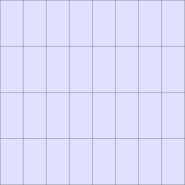

FerriteTikz.jl
Publication-grade TikZ graphics of Ferrite.jl grids.
FerriteTikz emits plain TikZ code and hands it to TikzPictures.jl. The figures therefore use the fonts, line widths and colours of the document they end up in, and they stay vector graphics all the way into the final PDF. The focus is wireframes with flat, constant per-cell colouring, and the deformed configuration of a finite element solution.
Supported are grids in one or two spatial dimensions:
- area cells —
Triangle,Quadrilateral,QuadraticTriangle,QuadraticQuadrilateralandSerendipityQuadraticQuadrilateral; - line elements —
LineandQuadraticLine, in 1D space (a one-dimensional mesh, drawn along the x axis) or in 2D space (trusses and frames). A grid may mix both.
Cells with a quadratic geometric interpolation are drawn with true curved edges.
Use FerriteViz.jl to explore a solution interactively, with colour maps, warping, clipping and 3D. Use FerriteTikz.jl to produce the static mesh and deformation figures that go into a paper or a thesis. The two are complementary.
Installation
julia> ]add FerriteTikzA first picture
using FerriteTikzgrid = generate_grid(Quadrilateral, (8, 4))tikzgrid(grid; cellcolor = "blue!12", picturescale = 6.5)
The returned object is a TikzPictures.TikzPicture. It renders inline in VSCode, Pluto and IJulia, and it is written to disk with the usual TikzPictures machinery:
save(PDF("grid"), p) # standalone PDFsave(SVG("grid"), p) # standalone SVGsave(TEX("grid"), p) # standalone .tex documentsave(TEX("grid"; limit_to = :picture), p) # just the tikzpicture, ready to \inputsave(TEX(...); limit_to = :picture) is usually what you want for a paper: the figure is \input into the document and picks up its font and colour definitions automatically.
The generated code
Nothing is hidden — tikzcode returns exactly the code that goes inside the tikzpicture environment, so a figure can always be tweaked by hand afterwards:
grid = generate_grid(Quadrilateral, (2, 1))print(tikzcode(grid; cellcolor = "blue!12", drawnodes = true))\fill[blue!12] (-1,-1) -- (0,-1) -- (0,1) -- (-1,1) -- cycle;
\fill[blue!12] (0,-1) -- (1,-1) -- (1,1) -- (0,1) -- cycle;
\draw[thin, black] (-1,-1) -- (0,-1);
\draw[thin, black] (0,-1) -- (0,1);
\draw[thin, black] (0,1) -- (-1,1);
\draw[thin, black] (-1,1) -- (-1,-1);
\draw[thin, black] (0,-1) -- (1,-1);
\draw[thin, black] (1,-1) -- (1,1);
\draw[thin, black] (1,1) -- (0,1);
\node[circle, fill=black, inner sep=0pt, minimum size=0.08cm] at (-1,-1) {};
\node[circle, fill=black, inner sep=0pt, minimum size=0.08cm] at (0,-1) {};
\node[circle, fill=black, inner sep=0pt, minimum size=0.08cm] at (1,-1) {};
\node[circle, fill=black, inner sep=0pt, minimum size=0.08cm] at (-1,1) {};
\node[circle, fill=black, inner sep=0pt, minimum size=0.08cm] at (0,1) {};
\node[circle, fill=black, inner sep=0pt, minimum size=0.08cm] at (1,1) {};Note that the shared interior edge is drawn once, not twice.